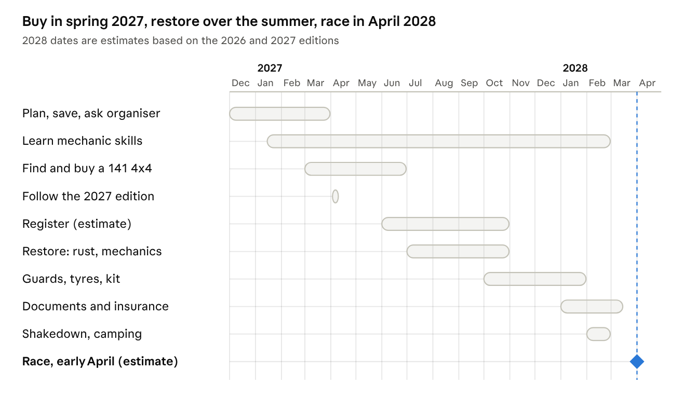

Panda Raid 2028: road to the start line
Summary
The Panda Raid crosses Morocco in about a week, with around 2,000 km of tracks and dunes. It starts with a ferry from Almería in southern Spain. Plan on a pre-2003 "first series" Panda 4x4, an entry of roughly €2,500 to €3,000 per team (estimate), and an all-in team budget of about £11,000 to £19,000 (estimate).
The organiser's website (pandaraid.com) is only a page of social links, so everything here comes from press reports. Treat each fact as "last seen", and confirm it with the organiser before you spend money.
What the sources agree on:
- Cars: first-series Fiat Panda and Panda 4x4 built up to 2003, plus Seat Panda and Seat Marbella. Classes are 4x2, 4x4 and Student (Stellantis, 2017; Carlider, 2021).
- Dates: 11 to 18 April 2026 (La Voz, Apr 2026) and 3 to 10 April 2027 (foro3d, Nov 2026). 2028 is not announced. This plan assumes early April 2028.
- Size: 360 teams from 18 countries in 2025 (Telemariñas), and 400+ in 2026.
- Not a speed race: it is navigation and endurance (Carlider). Teams also carry school supplies and humanitarian aid.
An earlier plan for the Panda Desert (Italy to Tunisia) is kept here for comparison.
The three decisions that shape everything:
- Which car: an original boxy Panda 4x4 (1983 to 2003). This is the only Fiat 4x4 that qualifies. A 2WD Panda or Marbella is cheaper but goes in the 4x2 class.
- Where it is registered: keep it UK registered and insured, and MOT'd.
- When to buy: spring 2027. A 25 to 40 year old car needs more restoration time than a modern one.
Event rules and entry
No official rulebook could be read, so these points are pieced together from reports. Confirm them all with the organiser.
Format. In 2026: ferry Almería to Nador, technical checks at Nador, then six off-road stages of 250 to 450 km via Bouarfa, Merzouga (the big dunes) and Tafraute, finishing at Mehdia beach on the Atlantic. Total about 2,060 km (La Voz). Older editions started in Madrid and finished in Marrakech (Stellantis, 2017). The return is via Algeciras (apandadores).
Entry fee: about €2,500 per car and two people in 2022, "with many things included", and €150 off for student teams under 29 (Garaje Hermético, 2022). In 2015 it was under €2,000, including the ferry, breakfasts and dinners, paperwork, insurance and assistance during the raid (Motor16, 2015). The 2028 price and inclusions are unknown.
Support: in 2017, a 24-hour helicopter, a fleet of 4x4 support vehicles, medical help and camp meals (Diariomotor, 2017). Satellite tracking of every car was reported in 2015.
Rules reported for the car:
- Original-size 13-inch wheels are compulsory. Tyres must be within ±3% of the original 562 mm diameter, so 155/80 R13 fits and bigger sizes may need spacers (Carlider).
- Sump guard required, and documents in order: registration, insurance, roadworthiness test (Stellantis, 2017).
- Organiser's basic preparation in 2022: six tyres, sump guard, fuel tank guard, first-aid kit, 5 m tow strap, USB socket, tow hooks (Garaje Hermético).
- A classic compass and a cabin electrical installation were required in 2017 (Diariomotor, 2017).
Nights: the 2017 guide tells crews to bring a tent, an inflatable mattress and a sleeping bag rated to 5 to 10 °C, so plan for camping.
Morocco paperwork: check entry rules and car insurance cover for Morocco with the FCDO and your insurer. I have not verified Morocco's visa or vehicle import rules for this plan.
Timeline
You have about 16 months. Buy early, because restoring an old Panda takes longer than you expect.

- Dec 2026 to Mar 2027: plan. Agree a budget ceiling and how you split it. Message the organiser (via Facebook or Instagram) to ask for the 2028 rulebook, the fee, and whether they take UK-registered right-hand-drive cars. Start an evening maintenance course.
- Mar to Jun 2027: buy the car. First check that your insurer will cover Morocco. Then shortlist, get a specialist inspection (mainly for rust), buy and insure it.
- 3 to 10 April 2027: follow the 2027 edition. Watch the social feeds for the route, what breaks and the checks.
- Jun to Oct 2027 (estimate): register as soon as 2028 entries open.
- Jul to Oct 2027: restore. Rust, brakes, suspension, cooling, cambelt, electrics. Drive it daily.
- Oct 2027 to Jan 2028: prepare and kit up. Guards, tyres, wiring, camping and recovery kit.
- Jan to Mar 2028: paperwork. Passports, insurance, travel cover, organiser forms. Book the UK to Spain crossing.
- Feb 2028: shakedown. A weekend on green lanes, camping out of the car, fully loaded.
- Late March 2028 (estimate): drive to Almería. Allow 3 to 4 days.
- Early April 2028 (estimate): race, then ferry back to Spain and drive home.
Car sourcing
Buy a first-series Panda 4x4 (type 141) in the UK in spring 2027, for about £3,500 to £6,500.
| Option | Years | UK price | Fit for this raid |
|---|---|---|---|
| Fiat Panda 4x4, first series (141) | 1983 to 2003; UK sales ended 1992 | £3,500 runner, £6,500 decent, up to £12,500 best (Hagerty) | Recommended. The 4x4 class, the classic raid car, simple to fix. Rust is the main worry |
| Fiat Panda 2WD (141) or Seat Marbella | Up to 2003 | Lower; not checked | Eligible in the 4x2 class. Cheaper, but needs sand ladders and more digging |
| Panda 2004 onwards | 2004+ | n/a | Not eligible under the reported pre-2003 rule |
Where to look (UK): Car & Classic, Classic Trader, Brightwells and other classic auctions, the Fiat Forum classifieds, eBay and Facebook Marketplace.
Left-hand drive from Spain or Italy: there are many more 141s there and they are cheaper. But a UK resident would normally have to import and re-register the car with the DVLA. I haven't checked the cost or the steps, so only consider this if a UK car can't be found.
What to check on a 141 (Hagerty): rust in the door bottoms, sills, floor, boot floor, inner arches, bonnet and wings, plus filler on top and underneath. Also check the prop shaft and diffs for slop, and the rear leaf springs for sagging. Buy the best body you can afford, because rust repair costs more than mechanical work.
Car preparation
On a car this old, reliability comes from restoration first, then protection, then kit. Budget about £1,800 to £3,600 for parts and labour (estimate).
1. Restoration baseline (by Oct 2027)
- Rust repair and underbody protection.
- Full service: oil, filters, coolant, gearbox, transfer and diff oils, plugs, brake fluid.
- Cambelt, water pump, auxiliary belt, all hoses.
- Brakes, ball joints, bushes, wheel bearings, CV boots, leaf springs or rear shackles.
- Starter, alternator, fuel pump, ignition parts, earth straps.
- Radiator and fan. Overheating is a classic old-Panda problem in sand.
2. Reported mandatory items (by Jan 2028)
- Steel sump guard, fuel tank guard.
- 13-inch wheels and six matching tyres within ±3% of 562 mm (for example 155/80 R13).
- Tow hooks front and rear, a 5 m tow strap.
- USB/12V socket and a cabin electrical installation, a classic compass, a first-aid kit.
3. Strongly recommended
- Heavy-duty shocks and a modest lift of about 3 to 4 cm. Diariomotor calls suspension the place to spend money (Diariomotor).
- A cyclonic air filter or prefilter, a fuel prefilter, and a manual fan switch.
- Roof rack for the spares and camping kit, plus secure tie-downs.
- A snorkel only if the route has deep river crossings (suggested in Motor16, 2015).
Who can prepare it
- UK: I could not verify a UK workshop that prepares raid Pandas. The best route is a classic Fiat specialist or a good independent garage for the restoration, plus a 4x4 or rally fabrication shop for the guards and wiring. Ask on Fiat Forum's Panda Classic section for names.
- Spain: Panda Raid communities such as apandadores (panda@apandadores.es) can point you to the workshops and parts suppliers that Spanish teams use.
Mechanic skills to learn
Aim for both of you to do every job below on your own Panda by the February 2028 shakedown.
| Skill | Why it matters out there | How to learn |
|---|---|---|
| Wheel change on sand, tyre plug, re-inflate, pressures (2.0 road, 1.5 track, 0.8 to 1.2 bar sand) | Punctures and soft sand | Practise with your own kit; pressures from Carlider |
| Daily checks: oil, coolant, belts, bolts, leaks, guard | Catches most breakdowns early | A 10-minute checklist every evening |
| Ignition and fuel basics: plugs, leads, distributor, fuel filter | Old engines stop for simple reasons | Do them yourself during the restoration |
| Cooling repairs: hose, clamp, fan, sealant | Overheating in dunes | Replace a hose at home |
| Fuses, relays, wiring, battery | Vibration and heat break old wiring | A multimeter evening or a 12V course |
| Shock, ball joint, CV boot replacement | Common impact damage | Alongside your mechanic during the restoration |
| Self-recovery: sand ladders, digging, strap use | Getting unstuck | A UK 4x4 driving day |
| Roadbook, compass and GPS navigation | You navigate on your own | Green lanes with a GPX track and a compass |
| First aid | Remote areas, camping | One-day outdoor first-aid course |
Shopping list
R = reported as required in past editions; confirm against the 2028 rules.
Car protection and recovery
Navigation and power
Camping
Spare parts to carry (for a 141)
Tools
Crew
Budget
Expect about £11,000 to £19,000 for the team, or roughly £5,500 to £9,500 each, before selling the car afterwards. Every figure is an estimate. The fee is projected from the 2022 report, at an assumed €1 = £0.87.
| Item | Low (£) | High (£) | Basis |
|---|---|---|---|
| Entry fee, about €2,500 to €3,000 | 2,200 | 2,600 | Projected from ~€2,500 in 2022 |
| Car, first-series Panda 4x4 | 3,500 | 6,500 | Hagerty price bands |
| Restoration and rust | 1,000 | 2,000 | Estimate |
| Prep: guards, 6 tyres, suspension, wiring | 800 | 1,600 | Estimate |
| Camping, recovery and navigation kit | 700 | 1,200 | Estimate |
| Spares and tools | 400 | 700 | Estimate |
| Travel UK to Almería and home from Algeciras: crossings, fuel, tolls, hotels | 1,200 | 2,200 | Estimate |
| Fuel in Morocco, about 2,000 km | 150 | 300 | Estimate |
| Morocco car insurance, 2 travel policies | 200 | 500 | Estimate |
| Contingency and extras | 1,000 | 1,500 | Estimate |
| Total | 11,150 | 19,100 |
Ways to cut it: a 2WD Panda or Marbella in the 4x2 class, the student discount if either of you is under 29, sharing the drive with another UK team, and reselling the car afterwards.
Open questions
Sources
All opened 26 Nov 2026. Dates in brackets are when each source was published.
- Panda Raid official page (links only)
- La Voz de Lanzarote: 2026 route (Apr 2026)
- foro3d: Panda Raid 2027 dates (Nov 2026)
- Telemariñas: 2025 edition (Apr 2025)
- apandadores: Panda Raid (2025)
- Garaje Hermético: Panda Raid, 4L Trophy, Maroc Challenge (Jan 2022)
- Carlider: tyres and 13-inch rule (about 2021)
- Stellantis: Panda Raid 2017 (Mar 2017)
- Diariomotor: complete Panda Raid guide (Apr 2017)
- Diariomotor: preparing a Panda Raid car (Feb 2020)
- Motor16: Panda Raid (Dec 2015)
- Hagerty: Fiat Panda 1980 to 2003 buying guide